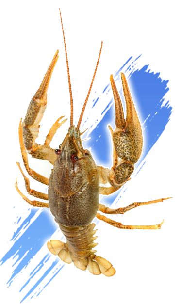
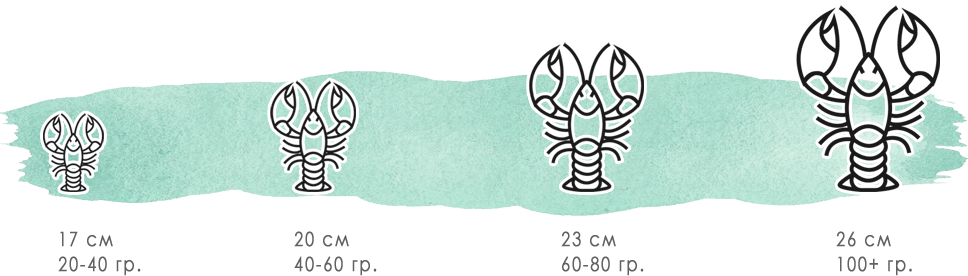
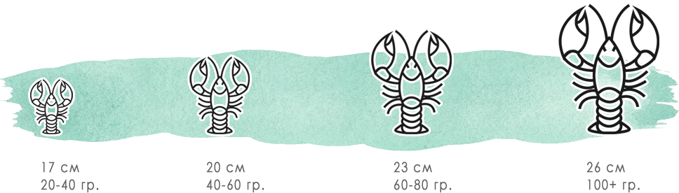
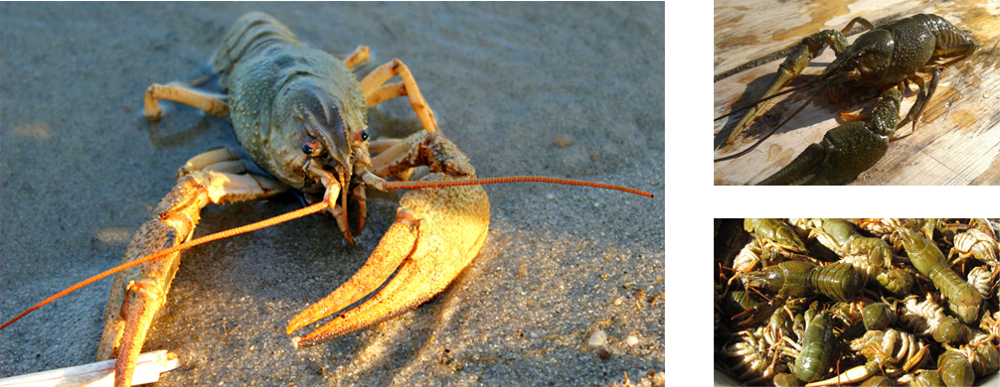
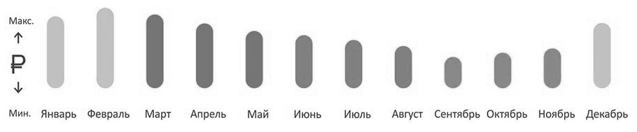
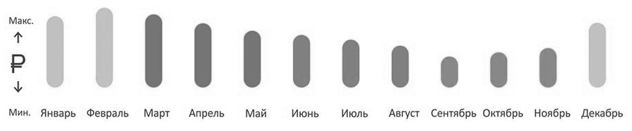

из сибири недорого
недорого
раки оптом
Абакан

Продажа живых Сибирских раков
любого веса и размера
Вылов в Новосибирской области
в экологически чистых водоемах
Опт от 50 кг с доставкой в город Абакан
Живые раки доставляются быстро, с документами и в свежем виде. Наши раки очень вкусные и полезные!
Скидка 5% на оптовую покупку раков - при обращении укажите кодовое слово “SIBRAKI”
+7 923 122 2442
пишите WhatsApp в любое время
по вопросам оптовых закупок раков
Двойная промывка в артезианской воде
Наши раки чистые, промытые и очень свежие
Не имеют никаких неприятных запахов
Мы гарантируем качество своей продукции
Все раки проходят предварительный ветеринарный контроль
Раки имеют ветеринарное свидетельство
раки всех размеров
от мелкого до отборного 
от мелкого до отборного 
БЫСТРАЯ ДОСТАВКА ПО РОССИИ
авиа и наземный транспорт
Вопросы доставки оговариваются индивидуально с каждым клиентом. Быстрая доставка позволяет сохранить вкусовые качества свежих раков из Сибири! Абакан
позвоните нам чтобы узнать возможность доставки в ваш город:
+7 923 122 2442 /WhatsApp/
авиа и наземный транспорт
Вопросы доставки оговариваются индивидуально с каждым клиентом. Быстрая доставка позволяет сохранить вкусовые качества свежих раков из Сибири! Абакан
позвоните нам чтобы узнать возможность доставки в ваш город:
+7 923 122 2442 /WhatsApp/

Раков на Руси любили всегда. Живые раки во все времена были популярным и ходовым товаром: их ели не только деревенские жители, которым живые раки в неограниченных количествах были доступны почти даром, но и горожане, в не меньшей степени обожающие это великолепное лакомство.
В прежние времена живые раки были экспортным товаром, а для того, чтобы живые раки всегда были в достатке, купцам предписывалось брать их с собой в дорогу и выпускать во все попавшиеся на пути водоёмы.
В наше время купить живых раков не составит труда - мы можем осуществлять оптовые поставки на регулярной основе в город Абакан по адекватной стоимости и в срок.
В разное время года оптовая цена на раков отличается - самые дешевые цены летом и осенью, самые дорогие зимой. Это связано со сложностью отлова раков в определенный период.  Звоните, уточняйте наличие и оптовые цены для города Абакан, бронируйте заказ по телефону:
+7 923 122 2442 /WhatsApp/
или пишите по электронной почте: sibrakiopt@yandex.ru
Абакан: купить раков оптом
Раков на Руси любили всегда. Живые раки во все времена были популярным и ходовым товаром: их ели не только деревенские жители, которым живые раки в неограниченных количествах были доступны почти даром, но и горожане, в не меньшей степени обожающие это великолепное лакомство.
В прежние времена живые раки были экспортным товаром, а для того, чтобы живые раки всегда были в достатке, купцам предписывалось брать их с собой в дорогу и выпускать во все попавшиеся на пути водоёмы.
В наше время купить живых раков не составит труда - мы можем осуществлять оптовые поставки на регулярной основе в город Абакан по адекватной стоимости и в срок.
цены: сколько стоят живые раки
В разное время года оптовая цена на раков отличается - самые дешевые цены летом и осенью, самые дорогие зимой. Это связано со сложностью отлова раков в определенный период.  Звоните, уточняйте наличие и оптовые цены для города Абакан, бронируйте заказ по телефону:
+7 923 122 2442 /WhatsApp/
или пишите по электронной почте: sibrakiopt@yandex.ru